Module 05 — Gestion du réseau¶
La transcription du support Drive et l’aide pédagogique sont séparées pour rendre leur provenance explicite.
SOURCE DRIVE · TRANSCRIPTION DU SUPPORT
Le contenu des documents du dossier TSSR est transcrit ci-dessous, page par page. Les textes et tableaux sont intégrés à la page Web. Aucun fichier PDF, aucune diapositive entière ni aucune reproduction de page n’est affiché. Seuls des croquis ou visuels isolés et vérifiés peuvent accompagner la transcription. Les versions et les consignes restent celles des supports de formation. Les compléments IA sont conservés dans leur onglet distinct.
Support · RES24_0050B - M05 - Linux Administration (Debian) · 19 pages transcrites
Administration Debian
GNU/Linux
Module 05 – Gestion du réseau
Gestion du réseau
Objectifs
- Prendre des informations sur le réseau
- Configuration réseau d’un système sans interface graphique
- Configuration réseau d’un système avec interface graphique
Interroger et configurer le réseau sous Linux.
Gestion du réseau
Prendre des informations
Prise d’information réseau
- Pour une mise en réseau des postes client et serveur, il faut que la couche IP soit correctement réalisée
- La configuration IP a généralement besoin :
- D’une adresse IP
- D’un masque réseau
- Potentiellement d’une passerelle par défaut
- Afin de pouvoir résoudre les noms d’hôtes, il faudra aussi renseigner un ou des serveurs DNS
Connaître l’adresse réseau
- Dans un shell, commande ip avec l’argument address ou son raccourci a
root@deb:~# ip a
1: lo: <LOOPBACK,UP,LOWER_UP> mtu 65536 qdisc noqueue state UNKNOWN group default
qlen 1000
link/loopback 00:00:00:00:00:00 brd 00:00:00:00:00:00
inet 127.0.0.1/8 scope host lo
valid_lft forever preferred_lft forever
inet6 ::1/128 scope host
valid_lft forever preferred_lft forever
2: ens33: <BROADCAST,MULTICAST,UP,LOWER_UP> mtu 1500 qdisc pfifo_fast state UP
group default qlen 1000
link/ether 00:0c:29:7c:ff:ba brd ff:ff:ff:ff:ff:ff
inet 192.168.1.50/24 brd 192.168.1.255 scope global dynamic ens33
valid_lft 85457sec preferred_lft 85457sec
inet6 fe80::20c:29ff:fe7c:ffba/64 scope link
valid_lft forever preferred_lft foreverConnaître passerelle et serveur DNS
- Dans un shell, commande ip avec l’option route ou son raccourci r
root@deb:~# ip r
default via 192.168.1.1 dev ens33
192.168.1.0/24 dev ens33 proto kernel scope link src
192.168.1.50- Les informations de DNS se trouvent dans le fichier /etc/resolv.conf
root@deb:~# cat /etc/resolv.conf
search mondomaine.fr
nameserver 10.1.2.20
nameserver 10.1.2.21Les prérequis
Démo
Informations réseau
Gestion du réseau
Système sans interface
graphique
Configuration IP en DHCP
- La configuration IP et DNS sur un système sans interface graphique se fait dans deux fichiers de configuration
- Le fichier /etc/network/interfaces permet de gérer la partie IP
- Il est possible d’avoir une configuration simplifiée via un serveur DHCP ou une configuration statique
root@deb:~# vim /etc/network/interfaces
# The loopback network interface
auto lo
iface lo inet loopback
# Carte réseau - Ethernet ens33
auto ens33
allow-hotplug ens33
iface ens33 inet dhcp Configuration IP statique
- Mettre en place une configuration statique dans le fichier /etc/network/interfaces
root@deb:~# vim /etc/network/interfaces
# The loopback network interface
auto lo
iface lo inet loopback
# Carte réseau - Ethernet ens33
auto ens33
iface ens33 inet staticaddress 10.1.1.10
netmask 255.255.0.0
gateway 10.1.255.254Configuration serveur DNS statique
- Mettre en place une configuration statique dans le fichier /etc/resolv.conf via la directive nameserver
root@deb:~# vim /etc/resolv.conf
search mondomaine.fr
nameserver 10.1.2.20
nameserver 10.1.2.21Prise en compte des modifications
On utilise la commande systemctl pour gérer le service networking
- Arrêter le service réseau
root@deb:~# systemctl stop networking.service- Démarrer le service réseau
root@deb:~# systemctl start networking.service- Redémarrer le service réseau
root@deb:~# systemctl restart networking.serviceSystème sans interface graphique
Démo
Mise en place d’une adresse IP fixe sur serveur
Debian
Gestion du réseau
Configuration réseau d’un système graphique
Gestion du réseau avec Network Manager
Network Manager est utilisé dans le cas d’un système Linux avec interface graphique (Desktop)

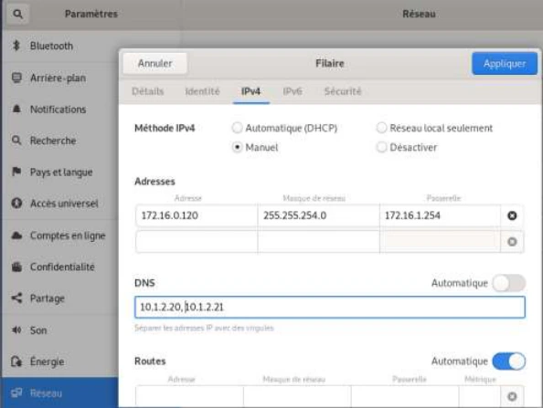

Prise en compte des modifications
On utilise la commande systemctl pour gérer le service NetworkManager
Redémarrer le service réseau
root@deb:~# systemctl restart NetworkManagerOu simplement l’interface graphique (Off, On)

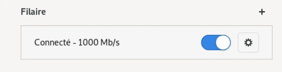
Gestion du réseau
Démo
Gestion du réseau au sein d’un bureau Gnome
Gestion du réseau
TP
Démo
Gestion de la configuration réseau d’un poste
Conclusion
- Vous savez consulter les informations réseau sur un système Linux
- Vous pouvez configurer l’adressage IP sur un serveur
- Vous pouvez configurer l’adressage IP sur un poste avec interface graphique
Référence du document : 1FKHUR6aoVOxjBVWtiPOjCKtnnxF8GatF · SHA-256 69edc58f1bc1f995…
Énoncé · M05TP01 - Enoncé - Gestion de la configuration réseau dun poste · 2 pages transcrites
Les noms de domaine de formation sont neutralisés explicitement. Certaines captures sont transcrites en tableaux ; les paramètres numériques et les procédures sont conservés.
Gérer la configuration réseau d’un poste
TP du Module 05 – Gestion du réseau
Avant de démarrer ce TP, il convient d’avoir suivi les vidéos des modules 1 à 5 et d’avoir réalisé les TP proposés.
Durée estimée
45mn à 1 heure
Énoncé
I. Configurer une adresse IP statique sur le serveur sans environnement graphique
Configurer la 1ere carte réseau détectée (ens33) avec l'adressage suivant :
- Adresse IP : 10.X.Y.1/16
- Avec le second octet X=n° de réseau.
- Pour récupérer votre réseau de salle, depuis le poste Windows hôte, ouvrir une fenêtre cmd et lancer la commande ipconfig
Dans cet exemple, le numéro de salle est 49
- avec le troisième octet Y=votre n° de stagiaire (donné par votre coach en début de semaine)
- Passerelle : 10.X.255.254
Transcription textuelle de la capture : les noms de domaine de formation sont neutralisés ; adresses IP, commandes et résultats sont conservés.
| Paramètre observé sur le poste Windows | Valeur |
|---|---|
| Commande | ipconfig |
| Interface | Carte Ethernet Ethernet |
| Suffixe DNS (nom de formation neutralisé) | laboratoire.example |
| Adresse IPv4 | 10.49.0.254 |
| Masque de sous-réseau | 255.255.0.0 |
| Passerelle par défaut | 10.49.255.254 |
Vérifier et adapter si nécessaire les paramètres de résolution de nom :
- Serveurs DNS : serveurs DNS de l’[organisme de formation] (à récupérer depuis votre poste avec ipconfig /all)
- Domaines résolus par défaut : laboratoire.example et [référence de l’organisme de formation neutralisée]
- Pour valider la bonne prise en compte du point précédent, vous pourrez essayer un ping vers les hôtes suivants :
- dc44-far
- dc35-cdb1
- repos
Modifier le nom de la machine :
- Indiquer le nom : deb-<prénom>-01 avec <prénom> = votre prénom
Attention, il y a 2 fichiers à modifier ! (/etc/hosts et /etc/hostname)
Ajouter une 2e carte réseau en Host-only à votre VM et utiliser les paramètres suivants :
- IP : 192.168.100.1/24
- Pas de passerelle par défaut
II. Configurer une adresse IP statique sur la machine avec environnement graphique
Configurer un adressage IP statique compatible avec la 1ere carte réseau de la VM Debian sans environnement graphique
- Pouvez-vous pinguer l'autre VM Debian ?
- Pouvez-vous pinguer les serveurs [organisme de formation] ?
Astuce
Précaution préalable : créer le fichier .vimrc avec l'activation du mode nocompatible
Pour le moment notre système est nativement en mode compatible Unix
Solution
Une solution est proposée pour ce TP sous la forme d'un PDF commenté, disponible dans les ressources à télécharger.

Transcription des commandes et informations utiles visibles
echo "set nocompatible" >> ~/.vimrcRéférence du document : 1ACf03zGCvDpm38SKRrP5DNIBKZyzLGL- · SHA-256 115dc7cb2a0e9401…
Correction · M05TP01 - Solution - Gestion de la configuration réseau dun poste · 6 pages transcrites
Noms de domaine de formation neutralisés explicitement ; paramètres numériques et procédures conservés.
Correction originale : à consulter après avoir tenté l’exercice.
Gérer la configuration réseau d’un poste
TP du Module 05 – Gestion du réseau
Avant de démarrer ce TP, il convient d’avoir suivi les vidéos des modules 1 à 5 et d’avoir réalisé les TP proposés.
Durée estimée
2 à 3 heures
Solution
I. Configurer une adresse IP statique sur le serveur sans environnement graphique
Configurer la 1ere carte réseau détectée (ens33) avec l'adressage suivant :
- Adresse IP : 10.X.Y.1/16
- Avec le second octet X=n° de réseau.
- Pour récupérer votre réseau de salle, depuis le poste Windows hôte, ouvrir une fenêtre cmd et lancer la commande ipconfig
Dans cet exemple, le numéro de salle est 49
- avec le troisième octet Y=votre n° de stagiaire (donné par votre coach en début de semaine)
- Passerelle : 10.X.255.254
Pour cette solution, je vais utiliser la salle 49 et le numéro de stagiaire 222
Donc le reseau 10.49.222.0/16
Transcription textuelle de la capture : les noms de domaine de formation sont neutralisés ; adresses IP, commandes et résultats sont conservés.
| Paramètre observé sur le poste Windows | Valeur |
|---|---|
| Commande | ipconfig |
| Interface | Carte Ethernet Ethernet |
| Suffixe DNS (nom de formation neutralisé) | laboratoire.example |
| Adresse IPv4 | 10.49.0.254 |
| Masque de sous-réseau | 255.255.0.0 |
| Passerelle par défaut | 10.49.255.254 |
Ouvrir une session avec l'utilisateur root
Précaution préalable : créer le fichier .vimrc avec l'activation du mode nocompatible
Pour le moment notre système est nativement en mode compatible Unix
Le fichier interfaces dans sa configuration d'origine
Modifier la mention allow-hotplug en auto passer de dhcp à static ajouter l’adresse (attention à l’orthographe anglaise),
le masque de sous reseau et la passerelle.
Redémarrer le service networking, optionnel : verifier le statut du service.

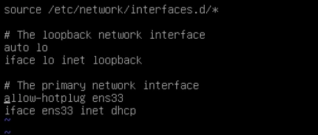
Transcription des commandes et informations utiles visibles
source /etc/network/interfaces.d/*
# The loopback network interface
auto lo
iface lo inet loopback
# The primary network interface
allow-hotplug ens33
iface ens33 inet dhcp
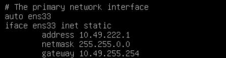
Transcription des commandes et informations utiles visibles
# The primary network interface
auto ens33
iface ens33 inet static
address 10.49.222.1
netmask 255.255.0.0
gateway 10.49.255.254
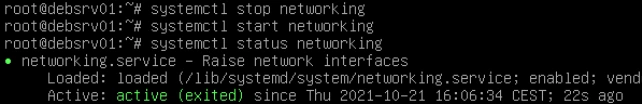
Transcription des commandes et informations utiles visibles
systemctl stop networking
systemctl start networking
systemctl status networking
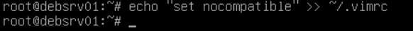
Transcription des commandes et informations utiles visibles
echo "set nocompatible" >> ~/.vimrc
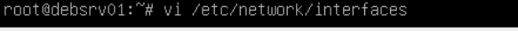
Transcription des commandes et informations utiles visibles
vi /etc/network/interfaces
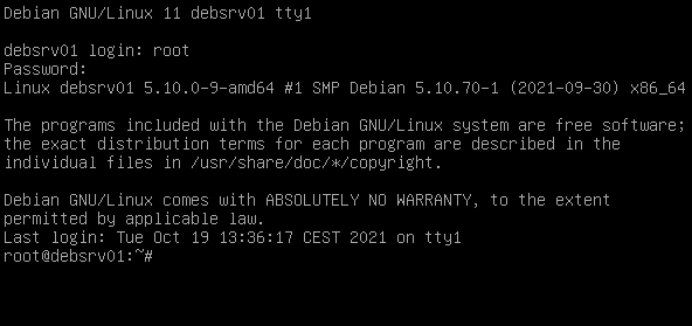
Vérifier et adapter si nécessaire les paramètres de résolution de nom :
Modifier le fichier /etc/resolv.conf
- Serveurs DNS : serveurs DNS de l’[organisme de formation]
- Domaines résolus par défaut : laboratoire.example et [référence de l’organisme de formation neutralisée] hostname Une seule directive search pour plusieurs domaines de recherches
mais une directive nameserver par serveur DNS
- Pour valider la bonne prise en compte du point précédent, vous pourrez essayer un ping vers les hôtes suivants :
- dc44-far
- dc35-cdb1
- repos
Les deux adresses “DC” sont résolues avec le domaine laboratoire.example
L’adresse repos elle appartient par contre au domaine [référence de l’organisme de formation neutralisée] Astuce avec ping, l’option “-c” permet de préciser le nombre de ping avant de quitter la commande
Transcription textuelle de la capture : les noms de domaine de formation sont neutralisés ; adresses IP, commandes et résultats sont conservés.
| Commande / cible | Adresse résolue | Résultats visibles |
|---|---|---|
| ping -c 2 dc44-far | 10.100.0.3 | 2 transmis, 2 reçus, 0 % de perte ; TTL 126 ; temps 5.00 et 4.74 ms ; min/moy/max/mdev 4.741/4.871/5.002/0.147 ms |
| ping -c 2 dc35-cdb1 | 10.35.0.3 | 2 transmis, 2 reçus, 0 % de perte ; TTL 127 ; temps 0.737 et 0.789 ms ; min/moy/max/mdev 0.737/0.763/0.789/0.026 ms |
| ping -c 2 repos | 10.0.0.21 | 2 transmis, 2 reçus, 0 % de perte ; TTL 62 ; temps 2.97 et 2.78 ms ; min/moy/max/mdev 2.783/2.875/2.967/0.092 ms |
Transcription de la capture : noms du réseau de formation neutralisés, paramètres numériques et suite conservés.
search laboratoire.example formation.example
nameserver 10.0.0.3
nameserver 10.100.0.3
Transcription des commandes visibles
vi /etc/resolv.confModifier le nom de la machine :
- Indiquer le nom : deb-<prénom>-01 avec <prénom> = votre prénom
Attention, il y a 2 fichiers à modifier ! (/etc/hosts et /etc/hostname)
→ Le fichier hostname contient uniquement le nom d'hôte.
→ Sur la seconde ligne du fichier hosts il faut modifier nom long et nom court de l'hôte.
La commande hostname rpermet la modification du nom d'hôte sans redémarrage Il faut ouvrir un nouveau shell ou une nouvelle session pour verifier cette prise en compte.
Ajouter une 2e carte réseau en Host-only à votre VM et utiliser les paramètres suivants :
Dans les paramètres de la machine virtuelle, ajout de la seconde carte
La commande ip a permet de montrer la nouvelle carte, ici ens35.
- IP : 192.168.100.1/24
- Pas de passerelle par défaut
→ Ajouter ces lignes dans le fichier /etc/network/interfaces Après redémarrage du service networking, la carte ens35 a récupérée son adresse IP

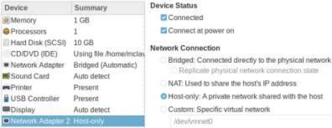

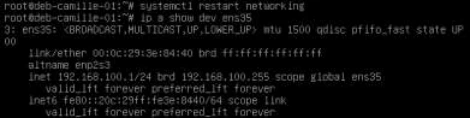
Transcription des commandes et informations utiles visibles
systemctl restart networking
ip a show ens35
inet 192.168.100.1/24 brd 192.168.100.255 scope global ens35
Transcription des commandes et informations utiles visibles
deb-camille-01Transcription de la capture : noms du réseau de formation neutralisés, paramètres numériques et suite conservés.
127.0.0.1 localhost
127.0.1.1 deb-camille-01.laboratoire.example deb-camille-01
Transcription des commandes et informations utiles visibles
hostname deb-camille-01
bash
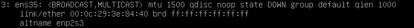
Transcription des commandes et informations utiles visibles
ip a
3: ens35: <BROADCAST,MULTICAST> mtu 1500 qdisc noop state DOWN group default qlen 1000
link/ether 00:0c:29:3e:84:4b brd ff:ff:ff:ff:ff:ff
altname enp2s3
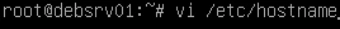
Transcription des commandes visibles
vi /etc/hostname
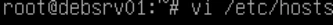
Transcription des commandes visibles
vi /etc/hosts
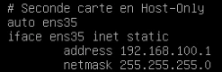
Transcription des commandes visibles
# Seconde carte en Host-Only
auto ens35
iface ens35 inet static
address 192.168.100.1
netmask 255.255.255.0II. Configurer une adresse IP statique sur la machine avec environnement graphique
Au démarrage saisir systemctl isolate graphical pour lancer la couche graphique
Ouvrir une session avec l'utilisateur standard Se rendre dans les paramètres de la carte ethernet.
Configurer un adressage IP statique compatible avec la 1ere carte réseau de la VM Debian sans environnement graphique
Cliquer sur l'icone en forme de roue dentelée
Dans l’onglet IPv4 passer en mode manuel et saisir une adresse valide. Pas de passerelle.
NB : l’interface graphique ne permet pas de saisir de nom de domaine DNS.

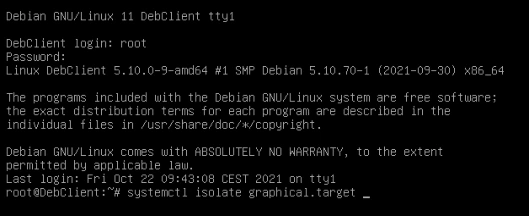
Transcription des commandes et informations utiles visibles
systemctl isolate graphical.target
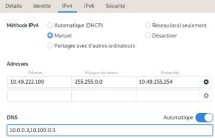

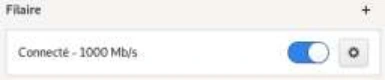


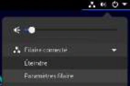
Au besoin les renseigner via la commande nmtui
Désactiver/réactiver la carte afin que ces modifications soient prises en compte
- Pouvez-vous pinguer l'autre VM Debian ?
- Pouvez-vous pinguer les serveurs [organisme de formation] ?
Si la configuration est correcte, il est possible de pinguer l'autre VM Debian comme les serveurs [organisme de formation]
Transcription textuelle de la capture : les noms de domaine de formation sont neutralisés ; adresses IP, commandes et résultats sont conservés.
| Commande depuis le client | Résultat visible |
|---|---|
| ping -c 2 10.49.222.1 | 2 transmis, 2 reçus, 0 % de perte ; TTL 64 ; temps 0.651 et 0.696 ms ; min/moy/max/mdev 0.651/0.673/0.696/0.022 ms |
| ping -c 2 dc44-far | Résolution 10.100.0.3 ; 2 transmis, 2 reçus, 0 % de perte ; min/moy/max/mdev 3.922/4.201/4.480/0.285 ms |
| ping -c 2 repos | Résolution 10.0.0.21 ; 2 réponses visibles ; TTL 62 ; temps 2.92 et 2.35 ms. La capture source ne montre pas le bilan final. |
Transcription de la capture avec neutralisation explicite des noms de domaine de formation.
Modifier la connexion — Wired connection 1
Configuration IPv4 : Manuel
Adresse : 10.49.222.100/16
Passerelle : 10.49.255.254
Serveurs DNS : 10.0.0.3, 10.100.0.3
Domaines de recherche (noms de formation neutralisés) : laboratoire.example, formation.exampleRéférence du document : 1OL_ukPXTnJ0uYLwwOkj_NZM4PQtkdVZ5 · SHA-256 d74f1cbf6f7b4042…
Complément IA / externe au cours — fiche pédagogique du portail
Cette fiche contient une reformulation et des aides d’apprentissage rédigées par IA. Elle est distincte de la transcription des documents du Drive et ne la remplace pas. Les schémas de synthèse de cette fiche sont des illustrations IA / externes au cours, sauf les captures explicitement attribuées à un document source.
Cours optimisé — reformulation pédagogique du support et des TP associés. Les exemples du parcours conservent leur contexte Debian 11 ; les corrections et actualisations sont identifiées comme compléments externes. Les transcriptions intégrales se consultent dans l’onglet Original.
Objectifs¶
- Identifier l’interface gérée et construire l’adressage à partir de X et Y.
- Configurer la carte du réseau de salle, puis la carte Host-only sans seconde route par défaut.
- Vérifier le nom d’hôte, la route, la résolution et la communication entre les deux VM.
Décomposer une configuration réseau¶
Une interface, une adresse avec préfixe, une route par défaut et un résolveur DNS remplissent des fonctions différentes. Lire ces éléments avant toute modification évite d’attribuer à DNS un défaut de liaison ou de routage.
ip a et ip r sont les formes courtes présentées dans le support. Relever le nom réel de l’interface : ens33 ou ens35 sont des exemples de VM, pas des noms universels. Un service actif ne suffit pas à prouver que l’adresse ou la route voulue est appliquée.
Configuration ifupdown du serveur¶
Le support utilise /etc/network/interfaces. Conserver la configuration de boucle locale, puis choisir DHCP ou statique pour l’interface concernée. Exemple statique de la leçon :
auto lo
iface lo inet loopback
auto ens33
iface ens33 inet static
address 10.1.1.10
netmask 255.255.0.0
gateway 10.1.255.254
Dans le cas DHCP, la déclaration devient iface ens33 inet dhcp. Le support montre l’arrêt, le démarrage et le redémarrage de networking.service. Ces actions peuvent couper une connexion SSH ; le TP se réalise avec la console de la VM disponible.
systemctl restart networking.service
systemctl status networking.service
ip address show ens33
ip route
DNS et noms locaux¶
Le support présente une directive nameserver par serveur DNS et une directive search pouvant contenir plusieurs domaines. Le suffixe de recherche permet de compléter un nom court ; il ne crée pas un enregistrement DNS.
Dans les transcriptions du TP, les domaines de l’organisme de formation sont remplacés explicitement par des domaines d’exemple. Les adresses IP et les noms courts utiles aux manipulations sont conservés. Les tests de ping -c 2 dc44-far, dc35-cdb1 et repos supposent l’existence des hôtes du laboratoire ; ils ne fonctionneront pas tels quels sur un réseau personnel.
Plan d’adressage du TP¶
| Interface / rôle | Adressage demandé | Route par défaut |
|---|---|---|
| Serveur, première carte | 10.X.Y.1/16 : X = réseau de salle, Y = numéro de stagiaire |
10.X.255.254 |
| Serveur, deuxième carte Host-only | 192.168.100.1/24 |
Aucune sur cette carte |
| Client graphique | Adresse distincte compatible avec la première carte du serveur | Selon le segment et la connectivité attendue |
Dans la correction, X vaut 49 et Y vaut 222 : l’hôte est 10.49.222.1/16, avec passerelle 10.49.255.254. Son réseau /16 est 10.49.0.0/16, même si la correction emploie 10.49.222.0/16 comme désignation du réseau. Cette rectification de calcul est un complément pédagogique, pas une modification silencieuse de l’original.
Récupérer les DNS du laboratoire sur le poste Windows avec ipconfig /all, sans inventer leurs adresses. Ajouter la seconde interface dans l’hyperviseur, confirmer sa détection avec ip a, puis la configurer sans créer une deuxième passerelle par défaut involontaire.
Nom d’hôte¶
Le TP demande deb-<prénom>-01. La démarche source adapte /etc/hostname et l’entrée locale correspondante dans /etc/hosts, puis applique le nom courant. Vérifier à la fois le nom court et, s’il existe dans l’entrée locale, le nom complet. L’apparence de l’invite n’est pas une preuve suffisante : elle peut n’être rafraîchie qu’à l’ouverture d’un nouveau shell.
Client graphique et NetworkManager¶
Dans les paramètres réseau, choisir IPv4 manuel, puis renseigner adresse, masque, route et DNS correspondant au plan. La correction utilise aussi nmtui pour des options non exposées dans son écran graphique. Désactiver/réactiver la connexion concernée et vérifier les valeurs réellement appliquées. Ne recopiez pas une absence de passerelle d’un écran hors de son contexte : elle empêche de joindre un réseau extérieur si aucune autre route ne convient.
Précision externe — qui gère l’interface ?
ifupdown et NetworkManager sont des mécanismes différents. Identifier celui qui gère réellement l’interface avant d’éditer ses fichiers. /etc/resolv.conf peut être généré par un gestionnaire ; une édition manuelle peut être écrasée. Configurer alors les DNS dans le gestionnaire utilisé. Références : configuration réseau Debian et NetworkManager.
Vérifier par couches¶
Contrôler successivement la présence de l’interface, l’adresse et le préfixe, une adresse voisine, la passerelle si nécessaire, puis la résolution d’un nom. Le complément getent hosts nom interroge la résolution du système ; il complète utilement ping, dont l’échec peut aussi venir du filtrage ICMP.
TP — Configurer puis contrôler les deux VM¶
- Sur l’hôte Windows, relever le réseau de salle avec
ipconfig, puis les DNS et suffixes avecipconfig /all. Calculer l’adresse du serveur à partir de X et Y et vérifier qu’elle est réservée à la VM. - Sur la console du serveur, identifier les interfaces et leur gestionnaire. Configurer la première carte avec l’adresse
10.X.Y.1/16et la passerelle10.X.255.254. Ajouter les DNS et les suffixes dans le mécanisme utilisé par cette carte. Contrôler la route après réactivation. - Attribuer le nom du scénario à la VM. Vérifier la cohérence de
/etc/hostname, de l’entrée locale dans/etc/hostset du nom courant. - Ajouter l’adaptateur Host-only dans l’hyperviseur. Configurer
192.168.100.1/24sur cette seule interface. Vérifier qu’elle fournit la route du segment isolé et que la route par défaut reste sur la première carte. - Sur le poste graphique, régler IPv4 en manuel avec une adresse distincte sur le même segment que la première carte du serveur. Tester le serveur par adresse IP, puis tester les services et les trois noms courts du laboratoire.
ip -br address
ip route show
hostnamectl
getent hosts dc44-far dc35-cdb1 repos
ping -c 2 dc44-far
ping -c 2 dc35-cdb1
ping -c 2 repos
Conserver les deux relevés d’adresse et de route, les résultats de résolution et le test vers l’autre VM. Un nom peut se résoudre alors que le ping échoue, par exemple si ICMP est filtré. La preuve de résolution et celle de connectivité se lisent séparément.
Schéma explicatif — complément pédagogique¶
Illustration IA / externe au cours — schéma pédagogique de synthèse.
À retenir¶
L’adresse et le préfixe définissent le réseau local, tandis que la passerelle sert aux destinations extérieures. Contrôler aussi la persistance des réglages DNS et l’interface utilisée pour chaque route.
Autoévaluation¶
- Quel est le réseau de
10.49.222.1/16? - Pourquoi éviter une passerelle sur la carte Host-only du TP ?
- Une édition de resolv.conf est-elle toujours durable ?
- Pourquoi séparer
getent hosts reposetping -c 2 repos? - Que contrôler après avoir ajouté la carte Host-only ?
Réponses commentées
10.49.0.0/16.- Cette carte relie un segment local ; le TP ne lui donne pas le rôle de sortie par défaut.
- Non ; le fichier peut être généré par le gestionnaire réseau.
- Le premier vérifie la résolution. Le second vérifie aussi la réponse ICMP, qui peut être filtrée même si le nom se résout.
- L’adresse
192.168.100.1/24, la route locale correspondante et la présence d’une seule route par défaut sur la carte prévue.
Pour travailler ce module¶
M05 — Gestion du réseau
18 questions
Teste tes connaissances sur ce module.